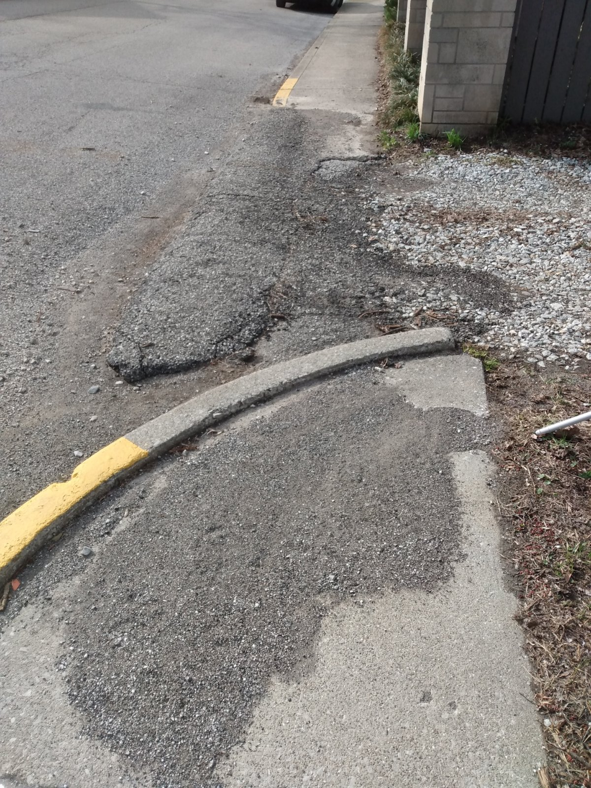
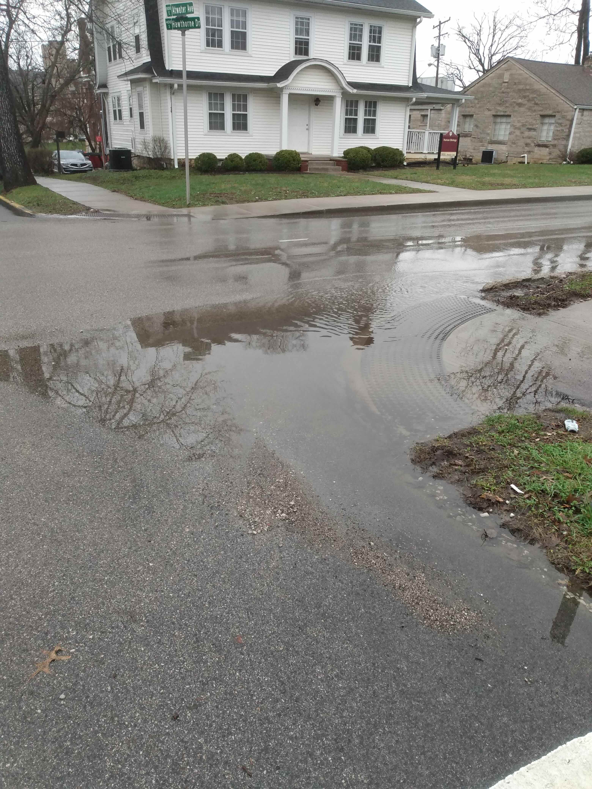
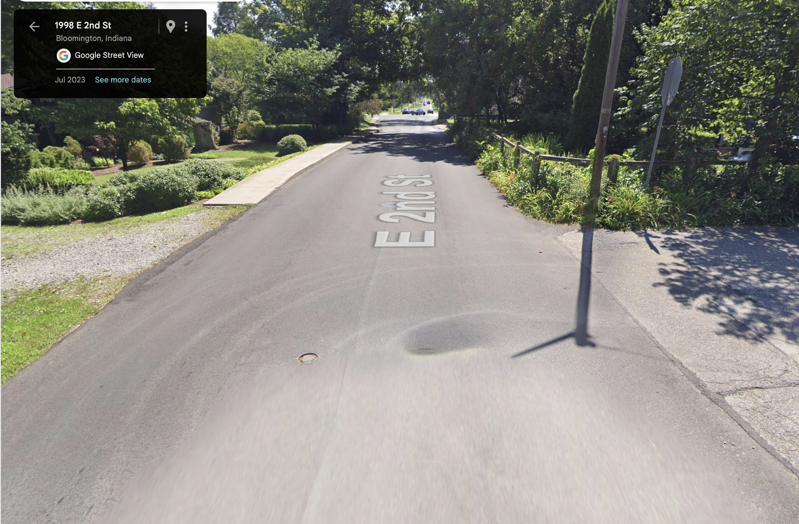
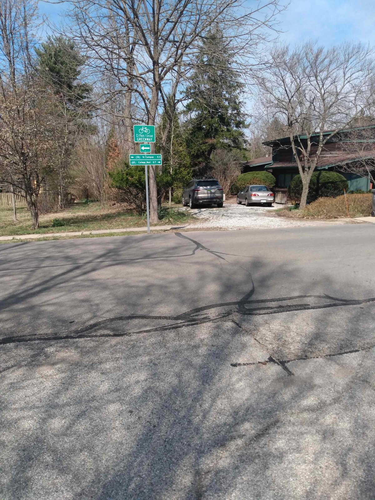
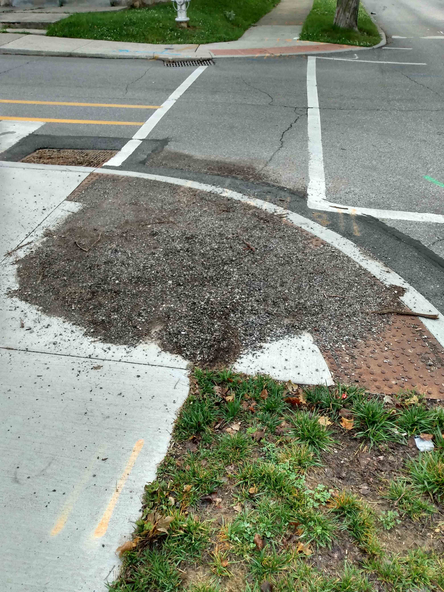
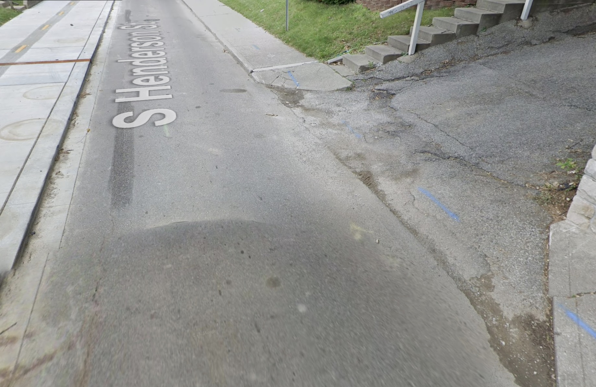
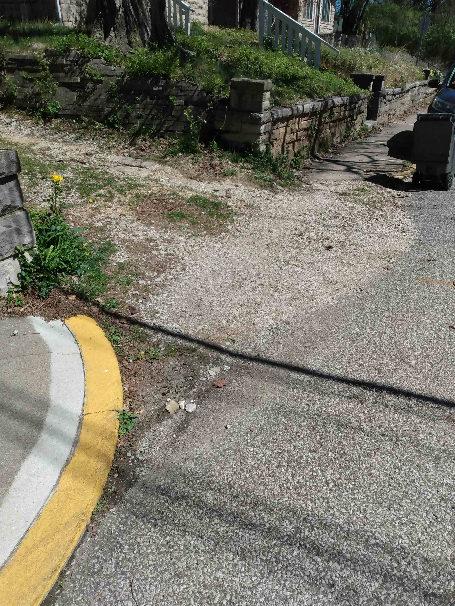
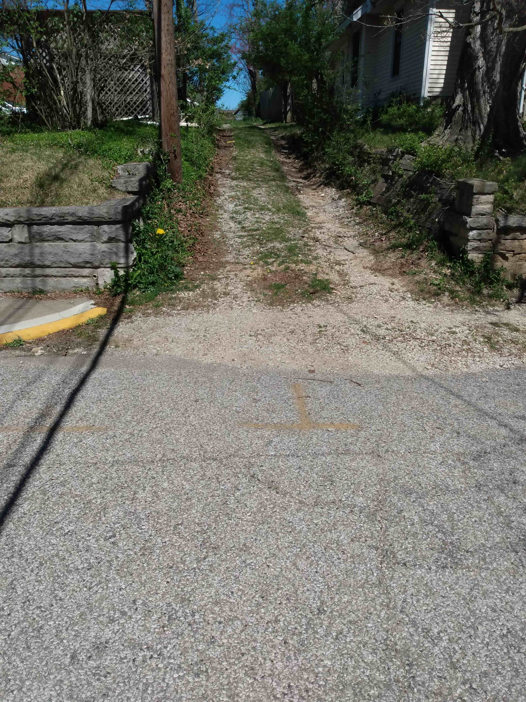
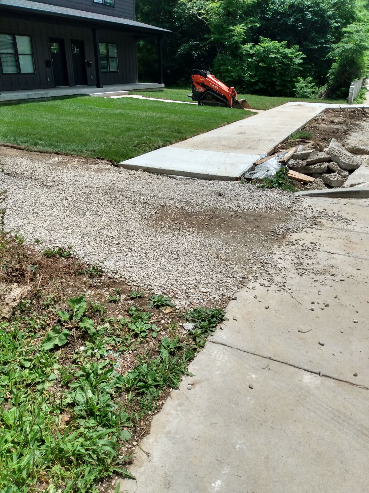
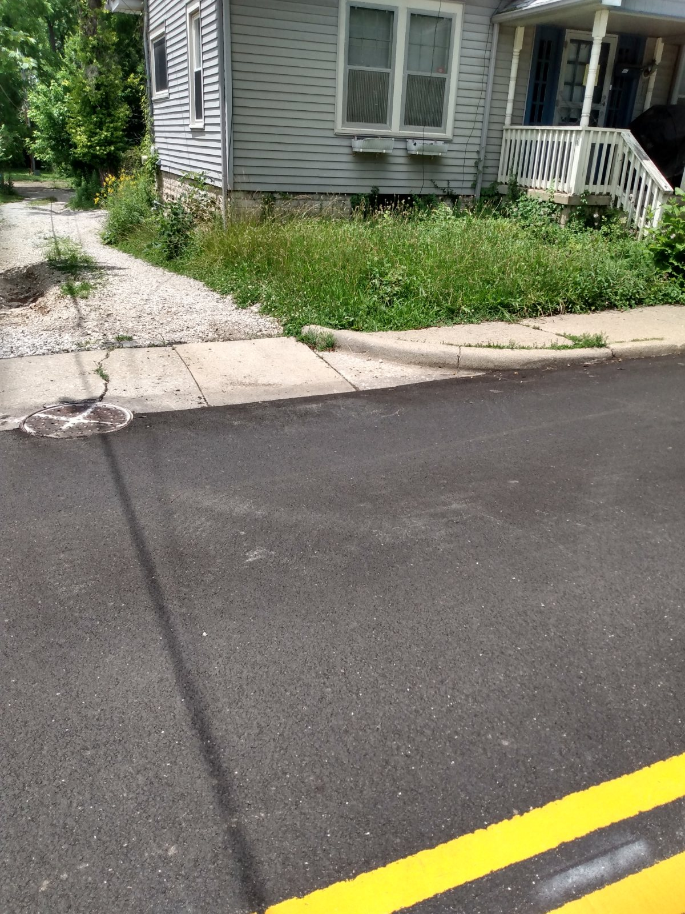

ADA Grievances Filed with the City of Bloomington, Indiana
A record of formal Title II accessibility grievances filed by Charles Livingston with the City —
and how, or whether,
the City has responded.
Below is a summary of formal ADA accessibility grievances I have filed with the City of Bloomington's ADA
Coordinator / Human Rights Commission office. Each grievance follows the same structure:
(a) It identifies a specific ADA accessibility violation, citing the applicable code and
documenting how the code requirement is not met.
(b) It documents the conditions that triggered the City's obligation to correct the
violation.
(c) It proposes a set of remedies.
A substantive response from the City is expected to:
(a) State, separately for each violation, whether it is confirmed or denied. (If denied,
the response must separately refute each asserted violation.)
(b) Where a violation is confirmed, state whether the documented triggering condition is
also correct.
(c) Where both are confirmed, provide a detailed correction plan, including a timeline and
a responsible party.
All grievances cite Title II of the Americans with Disabilities Act and the accessibility standards the City
formally adopted in 2011. Those standards are often quite ordinary. One of them asks only that the surface a
person walks
or rolls on be "firm, stable, and slip resistant." Loose gravel is none of the three.
In public messaging, elected officials describe the ADA as a sweeping civil rights guarantee. In practice,
whether a barrier gets fixed often comes down to a technical tolerance — whether a ramp's slope is within limit,
whether a gap is under an inch, whether a repaving project happened to fall just short of the threshold that would
have required an upgrade. Anyone who has filed a complaint and been told that what they experience daily does not,
on paper, count as a violation will recognize this practice as common. The City's own Transition Plans, however,
remove that
ambiguity.
Improvements to the right-of-way such as repaving (mill and fill, overlay, etc.),
traffic signal modernization, sidewalk improvements and repairs, et al., require
the City to update pedestrian facilities to meet ADA specifications.
— City of Bloomington ADA Transition Plans (2014, 2022, 2024, and draft 2026)
1. Hawthorne / Weatherstone Greenway Project (2024) — Non-Compliant with ADA Accessibility Standards
Triggering improvement: greenway construction and curb ramp replacement, 2024.
In 2022, the City's promotion for the $500,000 Hawthorne/Weatherstone Greenway specifically
identified creating an accessible facility as a goal: "Greenway projects have shown an increase in the number of
people walking, rolling, and bicycling in the area." "Rolling" is standard language for wheeled mobility devices
such as wheelchairs. Later, a calculated decision was made to skip sidewalk improvements: "At approximately 20% of
the
cost of sidewalk construction, Neighborhood Greenways provide relatively low-cost transportation improvements" —
and the word "rolling" was removed from public announcements.
As built, Hawthorne remained inaccessible along its length: broken sidewalk panels, and curb ramps that flood in
the rain. Replacing ramps that connect to impassable sidewalk, or that stand in water, does not produce an
accessible route. A wheelchair user traveling this corridor has no option but to travel in the roadway.

Alley crossing on Hawthorne, north of First: broken pavement and no level transition across the
sidewalk.

Flooding at southeast corner, Hawthorne and Atwater.
2. East Second Street, West of High Street and Rogers-Binford Elementary — No Accessible Sidewalk
Triggering improvement: surface grinding and curb ramp replacement.
East 2nd Street is a busy thoroughfare and the main access road to Rogers-Binford Elementary. Just
west of High Street there is no sidewalk on the south side and a 20-foot section of gravel on the north. The City
has ground down the raised edges where sidewalk panels meet, has replaced curb ramps along this route, and has
added
signage marking it a
bicycle greenway. It remains impassable to wheelchair users.
Pedestrian access route surfaces must be firm, stable, and slip resistant. Loose gravel is none
of the three. A person using a wheelchair who reaches this section has no compliant alternative and must travel
in a lane of 2nd Street, alongside school traffic.

Looking east towards High St. No sidewalk to the right, gravel to the left.

Looking north towards non-compliant area. The bicycle pathway signage is visible.
3. Henderson Street and East Second Street — No Accessible Curb Ramp Following Reconstruction
Triggering improvement: bicycle lane redesign and multi-use path conversion,
2023.
In its $200,000 Henderson (2nd to Smith) Neighborhood Greenway Connection, the City redesigned
bicycle lanes and converted much
of the west-side sidewalk into a multi-use path. The curb ramp at the northwest corner of Henderson and 2nd fills
with dirt and gravel that flows down the 2nd Street sidewalk in storms.
Because the sediment returns, this is a defect in the design rather than a lapse in maintenance: sweeping
restores the ramp temporarily, and the surface soon is not firm, stable, or slip resistant. The east-side sidewalk
was not improved and remains impassable. Wheelchair users have no option but to travel in the street within the
Henderson (2nd to Smith) Neighborhood Greenway.

The northwest ramp regularly fills with dirt and gravel.

The east side of Henderson does not offer an accessible alternative route.
4. East University between Grant and Henderson — Inaccessible Alley Crossing on Sidewalk
The City's sidewalk survey — part of the ADA Transition Plan the City is required to maintain —
rates the entire north sidewalk of University Street west of Henderson as "good." That sidewalk is interrupted by
an impassable stretch of gravel at an alley crossing.
Fresh grinding marks at the crossing show that crews worked at this exact location and corrected the lip without
addressing the gravel. Two things follow. The survey the City relies on to prioritize remediation is wrong about
this block, which raises the question of how many others it is wrong about. And the barrier was reachable: the
City had a crew on site. Wheelchair users on this street have no option but to travel in the narrow
roadway.

View of the sidewalk and alley cut from the west. Repair work evident.

View of the alley cut from the street.
5. Henderson Street, North of First Street — Construction Creates Inaccessible Sidewalk, Improper
Signage
This grievance is directed at process. It acknowledges at the outset that the particular
location will likely be repaired by the time the complaint is reviewed.
A section of sidewalk on Henderson, just north of 1st, was redesigned. In the process, an
ADA-compliant section of sidewalk was replaced with a gravel crossing; the transition to that crossing has a
3-inch vertical drop. Citizens who contacted City staff were given misleading or incorrect information and
staff members did not forward the issue to the ADA Compliance Officer. No mandatory warning signage was installed.
When
alerted to the issue, the violations remained unaddressed for
weeks. Then, during the new work, signage was installed directing people to cross the street — to a
sidewalk that is itself impassable to wheelchair users.
The ADA is unambiguous: construction that blocks a sidewalk must be marked with appropriate
signage and the alternate route must be ADA compliant. Addendum 2 documents that the failure to install
appropriate warning signage is commonplace.
Construction projects that affect accessibility must be reviewed before construction, monitored during it, and
checked on completion. This one was not, at any of the three stages, and no individual step in that sequence
should have required a complaint from the public to have happened correctly. For many weeks, wheelchair users
had no option
but to travel in a narrow two lane roadway that carries over 3,000 cars daily.

View of gravel crossing and 3 inch discontinuity.

West side of Henderson doesn't offer an accessible alternative during construction.